- トップ >
- かんたん工作コーナー
かんたん工作コーナー
簡単に作れる！的当てゲーム
家庭にある「ラップの芯」「トイレットペーパーの芯」「輪ゴム」だけで簡単に作れる的当ての作り方です！
比較的安全なので、小さい子どもさんも一緒に楽しめますよ♪
用意するもの
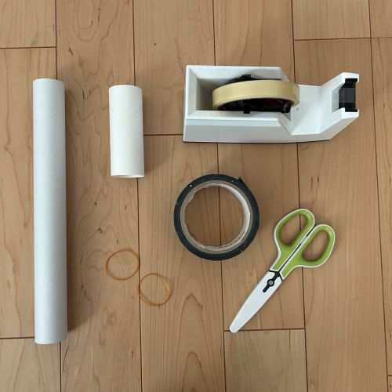
・ラップの芯：１本
・トイレットペーパーの芯：１本
・輪ゴム：２本
・セロハンテープ
・ガムテープ
・はさみ
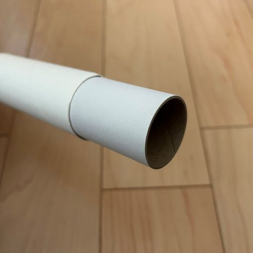
※トイレットペーパーの芯は、ラップの芯より少しだけ大きいものをご用意ください。
つくりかた
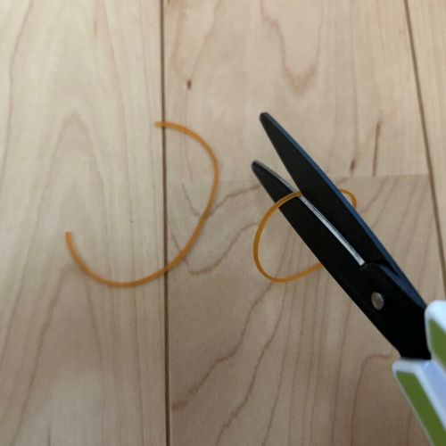
１．輪ゴムを１カ所切ります。（２本とも）
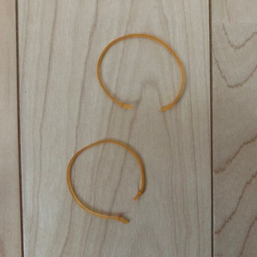
２．輪ゴムの両端を結んでおきます。
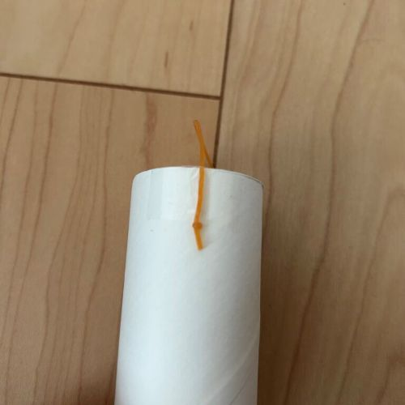
３．１本の輪ゴムをトイレットペーパーの芯に貼ります。
このとき、結んだ部分がテープの外になるように貼ることで、輪ゴムを引っ張っても外れにくくなります。
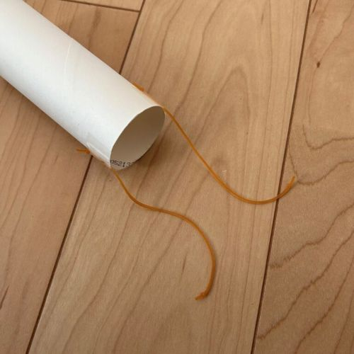
４．２本目の輪ゴムを、１本目の向かいに貼ります。
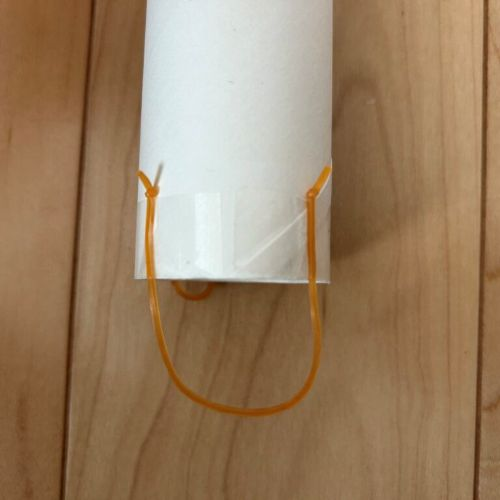
５．１本目と２本目の間に、一方の輪ゴムを輪にして貼り付けます。
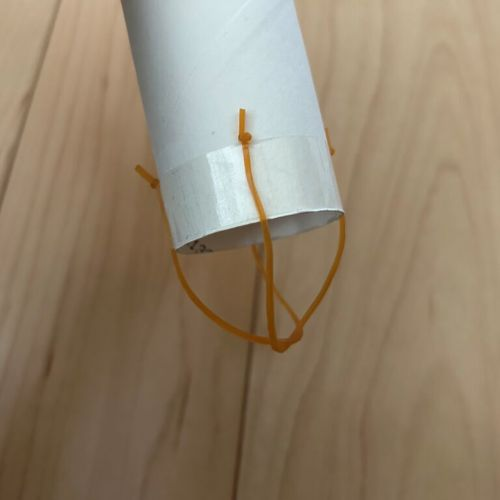
６．残りの輪ゴムを、５でできた輪に通して、交差させたら、５の向かい側に貼り付けます。
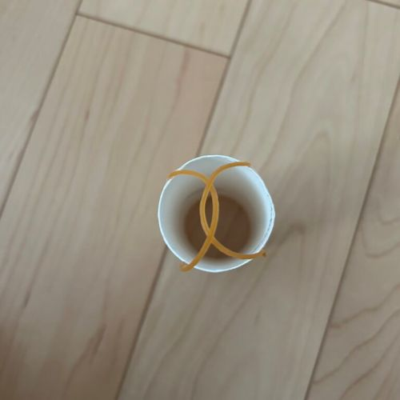
正面から見ると、このようになります。
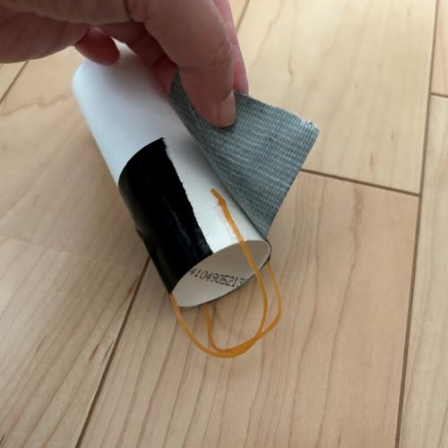
７．輪ゴムが外れないようにガムテープで固定して、完成です。
あそびかた
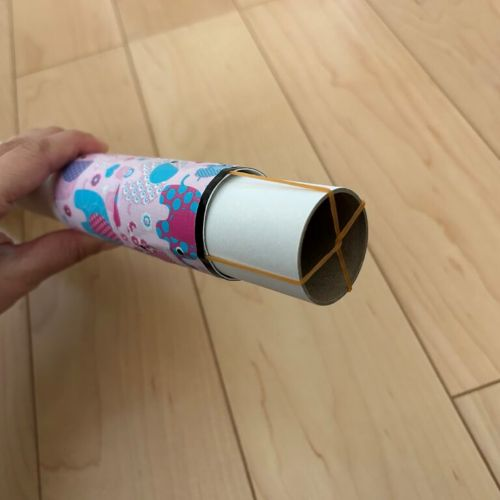
１．ラップの芯にトイレットペーパーの芯をセットします。
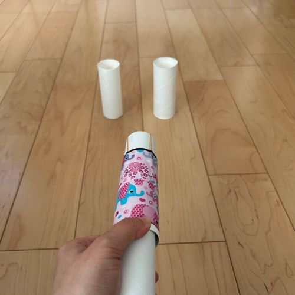
２．トイレットペーパーの芯を手前に引き、的を狙って手を離します。
アレンジ
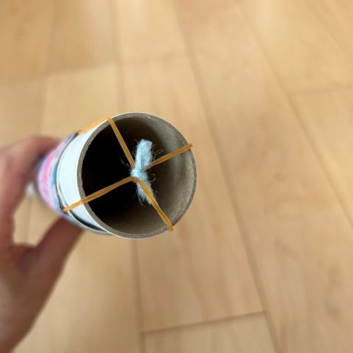
輪ゴムの中心がズレて上手く引っかからないときは、細いひもなどで中心を結ぶと遊びやすくなるよ
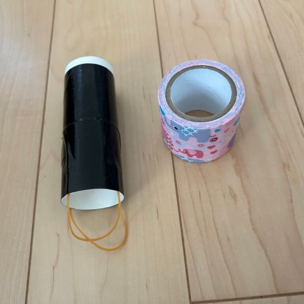
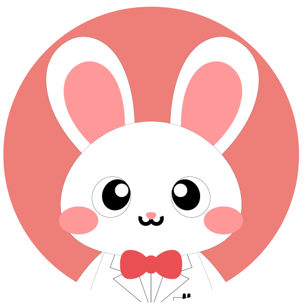
トイレットペーパーの芯にテープなどを巻くと可愛いね！